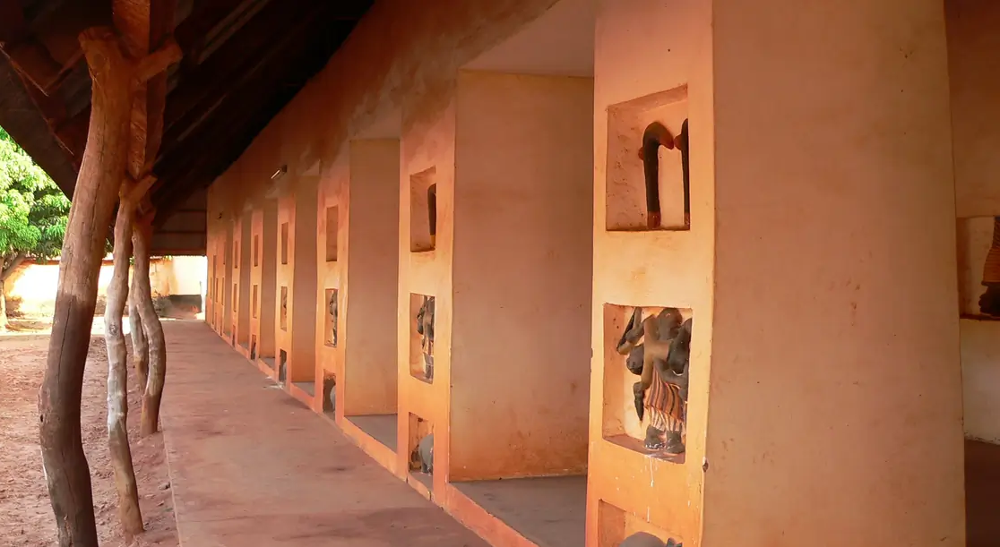
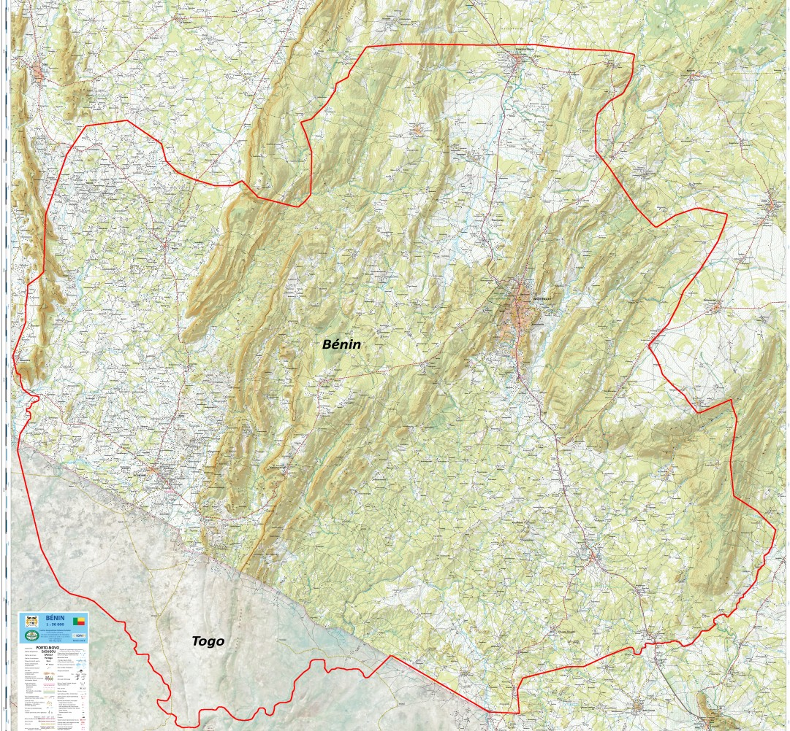
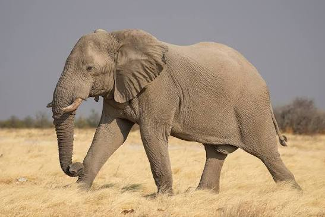
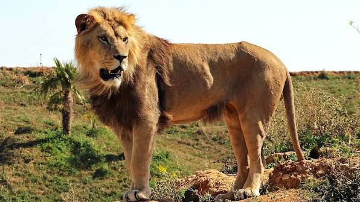
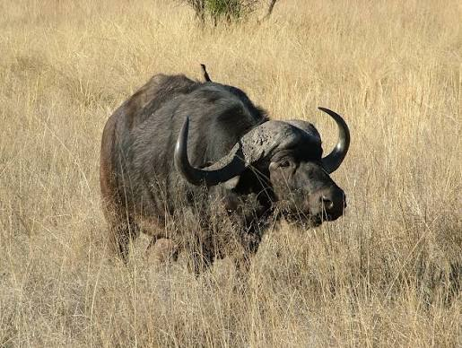
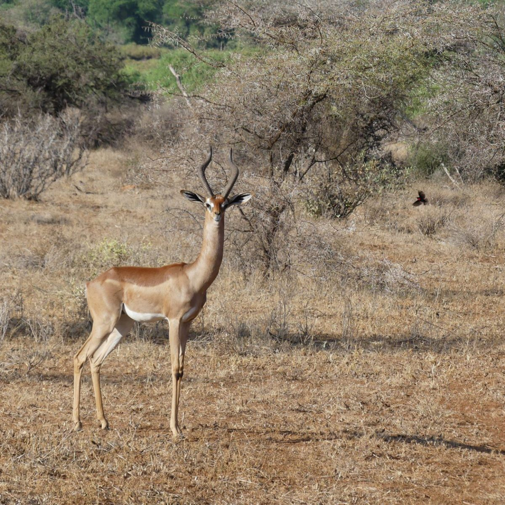

Les Palais royaux d'Abomey sont situés au cœur de la ville d'Abomey, chef-lieu du département du Zou, dans la partie centrale de la République du Bénin. La ville se trouve à environ 135 kilomètres au nord de Cotonou et constitue l'un des principaux centres historiques du pays. Les palais occupent un vaste espace urbain qui fut autrefois le siège du pouvoir politique du royaume du Danxomè.
Le site est localisé dans une région de plateaux caractérisée par un climat tropical de type subéquatorial. Son emplacement au centre du territoire béninois a favorisé son développement comme carrefour politique, économique et culturel durant plusieurs siècles. Cette position stratégique a permis aux souverains du Danxomè de contrôler les échanges régionaux et d'exercer leur influence sur une grande partie du territoire.
Les Palais royaux sont implantés dans l'enceinte historique de l'ancienne capitale du royaume du Danxomè. Ils couvrent une superficie d'environ 47 hectares délimitée par des murs de terre construits successivement sous les différents règnes. À l'intérieur de cet espace se trouvent les palais édifiés par plusieurs rois qui se sont succédé entre le XVIIe et le début du XXe siècle.
Les coordonnées géographiques du site se situent aux environs de 7°11' de latitude nord et 1°59' de longitude est. Le bien patrimonial s'insère aujourd'hui dans le tissu urbain moderne de la ville d'Abomey tout en conservant son caractère historique exceptionnel.
Coordonnées géographiques :
Aire du roi Akaba: Latitude 7.19444 Longitude 1.99306
Aire du Roi Gbéhanzin et autres: Latitude 7.18750 Longitude 1.99222
Cette localisation confère au site une accessibilité importante pour les visiteurs, les chercheurs et les gestionnaires du patrimoine. Les Palais royaux demeurent ainsi un point de référence majeur pour la compréhension de l'histoire politique, sociale et culturelle du Bénin et de l'ancien royaume du Danxomè.
Localisation des palais royaux d'Abomey.
Selon la tradition orale fon, l'histoire d'Abomey est étroitement liée à celle de la fondation du royaume du Danxomè. Le nom « Danhomè » est généralement interprété comme signifiant « dans le ventre de Dan ». Cette expression ferait référence au chef local Dan, dont le territoire aurait été intégré par le roi Houégbadja lors de l'établissement de la nouvelle capitale. Bien que les récits varient selon les traditions orales, cette légende demeure l'une des explications les plus connues de l'origine du nom associé au royaume et à sa capitale historique.
Entre le XVIIe et le début du XXe siècle, plusieurs souverains se succédèrent sur le trône du Danxomè, notamment Akaba, Agadja, Tegbessou, Kpengla, Ghézo, Glèlè et Béhanzin. Chacun d'eux édifia, agrandit ou transforma son propre palais à l'intérieur de l'enceinte royale. Cette succession de constructions a progressivement constitué un vaste complexe architectural retraçant l'évolution du royaume sur plus de deux cents ans.
Sous les règnes d'Agadja, de Ghézo et de Glèlè, le royaume connut une période d'expansion territoriale et de prospérité qui renforça l'importance d'Abomey comme capitale politique de premier plan en Afrique de l'Ouest. Les palais servaient alors de résidence royale, de centre décisionnel, de lieu de cérémonies officielles et de siège des institutions administratives du royaume.
Les murs, les cours intérieures, les bas-reliefs et les éléments décoratifs des palais témoignent des grands événements de l'histoire du Danxomè. Ils représentent des épisodes militaires, des symboles royaux, des croyances religieuses ainsi que les exploits des souverains. Ces éléments constituent aujourd'hui une source précieuse pour la connaissance de l'histoire politique et sociale du royaume.
À la fin du XIXe siècle, le royaume du Danxomè entra en conflit avec la France dans le contexte de l'expansion coloniale européenne. Le roi Béhanzin mena une résistance importante contre les troupes françaises avant la conquête du royaume en 1892. Une partie des palais fut alors endommagée ou incendiée au cours des affrontements, mais plusieurs bâtiments et vestiges furent conservés.
Après la période coloniale, les Palais royaux d'Abomey sont devenus un symbole majeur de l'identité historique et culturelle du Bénin. Leur importance exceptionnelle a conduit à leur inscription sur la Liste du patrimoine mondial de l'UNESCO en 1985. Aujourd'hui, ils demeurent l'un des principaux témoins matériels de la puissance, de l'organisation politique et de la richesse culturelle du royaume du Danxomè.
L'architecture des Palais royaux d'Abomey constitue l'une des expressions les plus remarquables de l'art de bâtir développé par le royaume du Danxomè entre le XVIIe et le XIXe siècle. Le site comprend une succession de palais construits par les différents souverains qui se sont succédé à la tête du royaume. Chaque roi édifiait sa propre résidence tout en respectant l'organisation générale de l'enceinte royale, créant ainsi un vaste complexe architectural unique en Afrique de l'Ouest.
Les constructions sont principalement réalisées en terre crue, matériau abondant dans la région d'Abomey. Les murs, parfois très épais, étaient conçus pour assurer la solidité des bâtiments tout en offrant une protection contre les fortes chaleurs. Les palais étaient organisés autour de vastes cours intérieures qui servaient de lieux de réunion, de cérémonies et d'administration du royaume.
L'ensemble architectural se caractérise également par la présence de portes monumentales, de cours royales, de temples, de salles de réception, de bâtiments résidentiels ainsi que d'espaces réservés aux activités administratives et cérémonielles. Cette organisation reflète la structure fortement hiérarchisée de la cour royale du Danxomè et le rôle central du souverain dans la vie politique et sociale du royaume.
L'un des éléments les plus remarquables des palais est constitué par les bas-reliefs décoratifs qui ornent certains murs. Réalisés en terre modelée et parfois peints, ces bas-reliefs représentent des symboles royaux, des scènes historiques, des animaux, des armes et des événements marquants du règne de chaque souverain. Ils servaient à transmettre la mémoire du royaume et jouaient le rôle de véritables archives visuelles de l'histoire dahoméenne.
L'architecture des palais traduit également l'alliance entre fonctionnalité et symbolisme. Chaque espace répondait à une fonction précise tout en portant une signification politique, religieuse ou culturelle. Les cours, les temples et les bâtiments étaient intégrés dans un ensemble cohérent destiné à exprimer la puissance du royaume ainsi que le caractère sacré de la royauté.
Aujourd'hui, malgré les destructions survenues à la fin du XIXe siècle lors de la conquête coloniale française et les dégradations liées au temps, les Palais royaux d'Abomey demeurent un témoignage exceptionnel du génie architectural des Fon. Ils constituent l'un des ensembles monumentaux en terre les plus importants d'Afrique et représentent une source majeure pour l'étude de l'histoire, de l'art et de l'urbanisme du royaume du Danxomè.

Les Palais royaux d'Abomey constituent un témoignage exceptionnel de l'existence et du développement du royaume du Danxomè, qui a joué un rôle majeur dans l'histoire politique de l'Afrique de l'Ouest entre le XVIIe et le XIXe siècle. Le site conserve les vestiges matériels d'un pouvoir royal organisé, capable de structurer durablement l'espace, l'administration, les pratiques religieuses et la vie sociale du royaume.
La valeur patrimoniale du bien repose en grande partie sur sa capacité à illustrer de manière concrète les réalisations artistiques et architecturales du peuple fon. Les palais royaux, les cours cérémonielles, les temples et les bas-reliefs constituent des témoins matériels rares permettant de comprendre l'organisation et l'évolution d'un grand royaume africain précolonial.
Les bas-reliefs figurant sur les murs des palais représentent l'un des éléments les plus remarquables du site. Ils relatent les événements marquants de l'histoire du royaume, les symboles associés aux souverains, les croyances religieuses ainsi que les valeurs fondatrices de la société dahoméenne. Ils constituent ainsi un important support de transmission de la mémoire historique et culturelle.
Le site possède également une forte valeur identitaire pour le Bénin. Il demeure aujourd'hui un lieu de mémoire associé à l'histoire du royaume du Danxomè et à l'héritage culturel du peuple fon. Les traditions royales, les récits historiques et certaines pratiques cérémonielles continuent d'entretenir le lien entre les communautés actuelles et leur patrimoine historique.
L'importance universelle des Palais royaux d'Abomey a été officiellement reconnue par leur inscription sur la Liste du patrimoine mondial de l'UNESCO en 1985. Cette reconnaissance repose sur leur caractère exceptionnel en tant que témoignage historique, artistique et architectural d'une civilisation ayant profondément marqué l'histoire de l'Afrique occidentale.
Les informations relatives aux Palais royaux d'Abomey ont été collectées à partir de sources institutionnelles, scientifiques et documentaires reconnues à l'échelle nationale et internationale. Ces références permettent de mieux comprendre l'histoire du royaume du Danxomè, l'évolution architecturale des palais ainsi que leur importance patrimoniale.
- UNESCO. Palais royaux d'Abomey (Bien n°323). Centre du patrimoine mondial. Consulter la source
- UNESCO. Cartes et délimitations du bien patrimonial. Consulter la source
- UNESCO. Documents officiels du bien n°323. Consulter la source
- UNESCO. Rapports sur l'état de conservation du site. Consulter la source
- Direction du Patrimoine Culturel du Bénin. Documentation sur les Palais royaux d'Abomey et le patrimoine historique du royaume du Danxomè.
- ICOMOS (Conseil international des monuments et des sites). Rapports d'évaluation relatifs à la conservation et à la gestion du bien inscrit au patrimoine mondial.
Le Koutammakou, également appelé « pays des Batammariba », est un vaste paysage culturel situé dans la partie nord-ouest de la République du Bénin, dans le département de l'Atacora. Il constitue la portion béninoise d'un territoire culturel transfrontalier partagé avec la République du Togo. Ce paysage remarquable est reconnu à l'échelle internationale pour son architecture traditionnelle en terre et pour les pratiques culturelles qui y sont encore vivantes.
Sur le plan administratif, le Koutammakou s'étend principalement sur les communes de Boukombé, Natitingou et Toucountouna. Il est délimité au nord par les communes de Tanguiéta et de Cobly, à l'ouest par la frontière togolaise, tandis que plusieurs localités de l'Atacora marquent ses limites orientales et méridionales. Cette position géographique contribue à son caractère de zone d'échanges culturels et historiques entre différentes communautés de la région.
Le site est localisé entre 10°00' et 10°31' de latitude nord et entre 0°59' et 1°35' de longitude est. Il s'étend sur environ 240 658 hectares dans sa partie béninoise, couvrant un ensemble de collines, de vallées, de plateaux et de zones agricoles qui constituent le cadre de vie traditionnel des Batammariba.
Le paysage est caractérisé par une alternance de savanes, de formations végétales naturelles et d'espaces cultivés où sont implantées les célèbres Takienta, des habitations fortifiées en terre qui constituent l'un des symboles majeurs du patrimoine culturel de la région. Cette implantation harmonieuse entre l'habitat, les espaces agricoles et le milieu naturel traduit une adaptation remarquable des populations locales à leur environnement.
Grâce à sa localisation transfrontalière et à la richesse de son patrimoine architectural, historique et paysager, le Koutammakou constitue aujourd'hui l'un des sites culturels les plus emblématiques d'Afrique de l'Ouest. Il représente un témoignage exceptionnel du mode de vie, des croyances et des savoir-faire traditionnels du peuple Batammariba.

L'histoire du Koutammakou est intimement liée à celle du peuple Batammariba, dont le nom signifie généralement « ceux qui façonnent la terre » ou encore « les véritables architectes de la terre ». Selon les traditions orales et les recherches historiques, les ancêtres des Batammariba se seraient installés dans cette région au cours des XVIIe et XVIIIe siècles, à une époque marquée par les conflits politiques et les razzias qui touchaient plusieurs régions d'Afrique de l'Ouest.
À la recherche d'un espace leur permettant de préserver leur liberté et leur mode de vie, ils se sont établis dans les montagnes et les plateaux relativement isolés de l'Atacora. Les reliefs accidentés, la végétation dense et l'éloignement des grands centres politiques ont contribué à protéger les communautés contre diverses formes d'invasions et de traite des esclaves qui affectaient alors la région.
Au fil des générations, les Batammariba ont développé un mode d'occupation du territoire original, fondé sur une étroite relation entre l'être humain, la terre et les forces spirituelles de la nature. Cette vision du monde a conduit à la création d'un paysage culturel où les habitations, les champs agricoles, les forêts, les sources, les rochers sacrés et les lieux cérémoniels forment un ensemble indissociable.
Les célèbres Takienta, habitations fortifiées en terre devenues l'emblème du Koutammakou, se sont progressivement imposées comme une réponse adaptée aux conditions de vie locales. Elles assuraient à la fois l'habitation des familles, le stockage des récoltes, la protection des biens et l'expression des croyances religieuses. Leur architecture reflète encore aujourd'hui l'organisation sociale et les valeurs culturelles des Batammariba.
Malgré l'arrivée de l'administration coloniale puis les mutations de l'époque contemporaine, les communautés du Koutammakou ont conservé une grande partie de leurs traditions, de leurs savoir-faire et de leurs pratiques cérémonielles. Cette remarquable continuité historique explique la reconnaissance internationale du site comme paysage culturel d'importance exceptionnelle.
La valeur universelle du Koutammakou a été officiellement reconnue par l'UNESCO lors de son inscription sur la Liste du patrimoine mondial en 2004. Cette reconnaissance a été renforcée par l'extension du bien au territoire béninois, confirmant le caractère transfrontalier et l'importance historique du pays des Batammariba dans la préservation du patrimoine culturel africain.
L'architecture du Koutammakou est dominée par les célèbres Takienta, des habitations fortifiées en terre qui constituent l'un des exemples les plus remarquables d'architecture vernaculaire en Afrique de l'Ouest. Ces constructions, devenues le symbole du peuple Batammariba, se distinguent par leur forme caractéristique de maison-tour à plusieurs niveaux et par leur parfaite intégration au paysage naturel.
Les Takienta sont construites à partir de matériaux entièrement locaux tels que la terre, le bois, la pierre et la paille. Leur architecture repose sur des techniques traditionnelles transmises de génération en génération. Chaque construction est le résultat d'un savoir-faire ancestral permettant de créer des bâtiments résistants aux conditions climatiques locales tout en assurant le confort de leurs occupants.
L'organisation interne des Takienta répond à des fonctions précises. Le niveau inférieur accueille généralement les espaces de vie quotidienne, les cuisines et parfois les enclos destinés aux animaux. Les niveaux supérieurs comportent des greniers destinés au stockage du mil, du sorgho et d'autres récoltes essentielles à la subsistance des familles. Les toits plats servent également au séchage des produits agricoles et à certaines activités domestiques.
Au-delà de leur fonction résidentielle, les Takienta possèdent une forte dimension symbolique et spirituelle. Chaque partie du bâtiment est associée à des croyances, à des pratiques rituelles ou à la mémoire des ancêtres. La maison n'est pas simplement considérée comme un abri, mais comme un élément fondamental de l'identité culturelle des Batammariba. Certaines parties de la construction sont utilisées pour les cérémonies, les offrandes ou la protection spirituelle de la famille.
L'implantation des Takienta dans le paysage reflète également l'organisation sociale traditionnelle. Les habitations sont réparties dans un environnement composé de champs agricoles, de bosquets sacrés, de sources et de lieux cérémoniels. Cette organisation témoigne d'une relation harmonieuse entre l'homme, l'architecture et la nature. L'ensemble forme un paysage culturel où chaque construction participe à l'expression de la vision du monde propre aux Batammariba.
Aujourd'hui encore, malgré les transformations de la société contemporaine, les Takienta demeurent le mode d'habitat privilégié de nombreuses familles. Leur préservation constitue un enjeu majeur pour la sauvegarde du patrimoine culturel du Koutammakou, car elles représentent à la fois un chef‑d'œuvre architectural, un témoignage historique et un symbole vivant de l'identité du peuple Batammariba.
Le Koutammakou possède une valeur patrimoniale exceptionnelle en raison de l'harmonie remarquable qui existe entre les communautés Batammariba, leur environnement naturel et leur architecture traditionnelle. À travers les siècles, les habitants ont développé un système d'occupation du territoire fondé sur le respect de la nature, des croyances ancestrales et des savoir-faire transmis de génération en génération. Cet équilibre a permis la préservation d'un paysage culturel unique en Afrique de l'Ouest.
L'une des principales richesses patrimoniales du Koutammakou réside dans ses Takienta, les célèbres habitations fortifiées en terre des Batammariba. Ces constructions constituent bien plus que de simples logements ; elles reflètent l'organisation sociale, les croyances religieuses, les connaissances techniques et l'identité même des communautés qui les ont édifiées. Chaque Takienta est conçue comme un espace de vie, de protection, de spiritualité et de transmission culturelle.
Le paysage du Koutammakou présente également une valeur patrimoniale exceptionnelle par la présence de nombreux éléments naturels et culturels associés aux traditions des Batammariba. Les forêts sacrées, les sources, les rochers rituels, les lieux d'initiation et les espaces cérémoniels font partie intégrante de la vie des communautés et témoignent de l'étroite relation entre la population et son environnement. Ces composantes contribuent à l'authenticité et à l'intégrité du site.
Le Koutammakou constitue également un exemple remarquable de préservation d'un patrimoine vivant. Contrairement à de nombreux sites historiques qui ne conservent que des vestiges du passé, les habitants continuent d'occuper les Takienta, de pratiquer leurs rites traditionnels, de transmettre leur langue et de perpétuer les techniques ancestrales de construction. Cette continuité culturelle renforce considérablement la valeur du site.
La reconnaissance internationale du Koutammakou a été consacrée par son inscription sur la Liste du patrimoine mondial de l'UNESCO. Cette distinction souligne non seulement l'importance culturelle du site pour les populations locales, mais également sa contribution exceptionnelle au patrimoine de l'humanité. Le Koutammakou est aujourd'hui considéré comme l'un des plus remarquables exemples de paysage culturel vivant où l'architecture, les traditions, les pratiques sociales et l'environnement naturel forment un ensemble indissociable.
Les informations présentées sur le Koutammakou proviennent de sources institutionnelles, scientifiques et documentaires reconnues. Ces références permettent de mieux comprendre l'histoire, l'architecture, l'organisation sociale et la valeur patrimoniale exceptionnelle du territoire des Batammariba.
- UNESCO. Koutammakou, le pays des Batammariba, Centre du patrimoine mondial. Consulter la source .
- UNESCO. Proposition d'extension du Koutammakou au Bénin. Consulter le document .
- Direction du Patrimoine Culturel du Bénin. Dossier de proposition d'inscription et documents de gestion du patrimoine culturel du Koutammakou.
- CRAterre-ENSAG. Études et publications consacrées à l'architecture traditionnelle des Takienta et à la conservation du patrimoine en terre.
- École du Patrimoine Africain (EPA). Travaux de recherche et programmes de préservation du patrimoine culturel en Afrique de l'Ouest.
PATRIMOINES NATURELS
Le Parc national de la Pendjari est situé dans le nord-ouest de la République du Bénin, dans le département de l'Atacora. Il constitue l'une des plus importantes aires protégées d'Afrique de l'Ouest et représente le principal espace de conservation de la biodiversité du pays. Le parc s'étend dans une région de savanes soudaniennes caractérisées par une forte diversité de paysages naturels et une richesse biologique exceptionnelle.
Le parc tire son nom de la rivière Pendjari, un affluent du fleuve Oti, qui traverse une partie importante du territoire protégé. Ce cours d'eau constitue une ressource essentielle pour la faune sauvage, en particulier durant la saison sèche, lorsque les points d'eau deviennent rares dans la région.
La Pendjari est localisée à proximité immédiate des frontières du Burkina Faso et du Togo. Cette position géographique lui confère un rôle stratégique dans la préservation des écosystèmes transfrontaliers de l'Afrique de l'Ouest. Elle fait aujourd'hui partie du vaste complexe écologique W-Arly-Pendjari (WAP), un ensemble d'aires protégées partagé entre le Bénin, le Burkina Faso et le Niger. Ce complexe constitue le plus grand système continu de zones protégées de savane de la région.
Le paysage du parc est composé de savanes arborées, de forêts claires, de galeries forestières, de plaines inondables et de zones humides associées aux cours d'eau. Cette diversité d'habitats favorise la présence d'une faune abondante comprenant de nombreuses espèces emblématiques telles que les éléphants, les buffles, les antilopes et les grands prédateurs africains. Les caractéristiques écologiques de la région expliquent sa reconnaissance comme Réserve de biosphère de l'UNESCO ainsi que son intégration au patrimoine mondial dans le cadre du complexe W-Arly-Pendjari.
Grâce à son emplacement stratégique et à la qualité de ses écosystèmes, le Parc national de la Pendjari constitue aujourd'hui un site majeur de conservation, de recherche scientifique, d'éducation environnementale et d'écotourisme au Bénin.
Coordonnées : Latitude 11.238889 Longitude 1.529167
L'histoire du Parc national de la Pendjari est étroitement liée aux efforts entrepris pour préserver les écosystèmes naturels du nord-ouest du Bénin. Avant son classement comme aire protégée, la région constituait déjà un espace privilégié pour la faune sauvage grâce à l'abondance de ses ressources en eau, à ses vastes savanes et à la faible densité de son occupation humaine.
Au cours du XXe siècle, les autorités coloniales puis les administrations nationales ont progressivement mis en place des mesures destinées à protéger la faune et les habitats naturels face à la pression croissante de la chasse et de l'exploitation des ressources naturelles. Ces initiatives ont conduit à la mise en place d'un système de protection qui a évolué pour donner naissance au Parc national de la Pendjari.
Au fil des décennies, la Pendjari est devenue l'un des principaux refuges de la grande faune en Afrique de l'Ouest. Le parc a joué un rôle fondamental dans la préservation de nombreuses espèces menacées, notamment les éléphants, les buffles, les hippopotames, les antilopes et plusieurs grands prédateurs africains.
La reconnaissance internationale du parc s'est renforcée avec son intégration à la Réserve de biosphère de la Pendjari dans le cadre du programme « Homme et biosphère » de l'UNESCO. Cette distinction a souligné l'importance écologique du site ainsi que son rôle dans la conciliation entre conservation de la nature et développement durable des populations riveraines.
Le parc fait aujourd'hui partie du complexe transfrontalier W-Arly-Pendjari, reconnu comme l'un des ensembles écologiques les plus importants d'Afrique. L'inscription de ce complexe sur la Liste du patrimoine mondial de l'UNESCO a confirmé la valeur universelle exceptionnelle de ses écosystèmes et de sa biodiversité.
Depuis les années 2010, des efforts importants de gestion, de surveillance et de restauration écologique ont été mis en œuvre afin d'assurer une meilleure protection de la faune et de renforcer le développement de l'écotourisme. Ces actions ont contribué à faire de la Pendjari l'un des modèles de conservation les plus reconnus d'Afrique de l'Ouest.
Le Parc national de la Pendjari est reconnu comme l'un des plus importants réservoirs de biodiversité d'Afrique de l'Ouest. Grâce à l'étendue de ses savanes, de ses galeries forestières, de ses zones humides et de ses forêts claires, il offre des habitats favorables à une grande variété d'espèces animales et végétales. Il constitue aujourd'hui l'un des derniers refuges de la grande faune sauvage de la région.
La faune du parc comprend plusieurs espèces emblématiques de la savane africaine. On y rencontre notamment des éléphants de savane, des buffles d'Afrique, des hippopotames, des bubales, des cobs de Buffon, des damalisques et diverses espèces d'antilopes. La présence de ces populations animales témoigne de la qualité écologique et de l'intégrité des habitats naturels du parc.
La Pendjari abrite également plusieurs grands prédateurs parmi les plus menacés du continent africain. Le parc est considéré comme l'un des derniers bastions du lion d'Afrique de l'Ouest, une sous-population particulièrement rare et vulnérable. On y observe également des léopards, des hyènes tachetées et d'autres carnivores jouant un rôle fondamental dans l'équilibre des écosystèmes.
L'avifaune y est tout aussi remarquable. Des centaines d'espèces d'oiseaux ont été recensées dans le parc, parmi lesquelles des rapaces, des hérons, des cigognes, des calaos, ainsi que de nombreux oiseaux migrateurs utilisant la région comme zone de repos ou d'hivernage. Cette diversité fait de la Pendjari un site privilégié pour l'observation ornithologique.
La flore du parc participe également à sa richesse écologique. Les paysages sont composés de savanes arborées dominées par des espèces adaptées aux conditions climatiques soudaniennes, ainsi que de formations forestières associées aux cours d'eau. Ces écosystèmes assurent des fonctions essentielles de protection des sols, de régulation hydrologique et de maintien des habitats naturels.
Grâce à cette biodiversité exceptionnelle, le Parc national de la Pendjari joue aujourd'hui un rôle fondamental dans la conservation du patrimoine naturel ouest-africain. Il constitue un laboratoire naturel pour la recherche scientifique ainsi qu'un espace stratégique pour la protection des espèces menacées.


Le Parc national de la Pendjari occupe une place essentielle dans la conservation de la biodiversité ouest-africaine. Il constitue l'un des derniers grands refuges naturels permettant le maintien d'écosystèmes de savane relativement intacts dans une région soumise à de nombreuses pressions humaines. Grâce à son vaste territoire et à la diversité de ses habitats, le parc offre des conditions favorables à la survie de nombreuses espèces animales et végétales.
La Pendjari joue un rôle fondamental dans la protection de plusieurs espèces menacées à l'échelle régionale et mondiale. Elle abrite notamment certaines des populations les plus importantes de grands mammifères d'Afrique de l'Ouest, contribuant ainsi au maintien de la diversité génétique de ces espèces. La présence d'éléphants, de buffles, d'hippopotames, de lions et de nombreuses antilopes témoigne de la qualité écologique exceptionnelle du parc.
Le réseau hydrographique dominé par la rivière Pendjari joue également un rôle écologique majeur. Les zones humides associées au cours d'eau constituent des habitats indispensables pour la faune sauvage, favorisent la reproduction de nombreuses espèces et participent au maintien des équilibres écologiques régionaux.
Le parc contribue également à la régulation du climat local, à la protection des sols contre l'érosion et au maintien des cycles naturels de l'eau. La végétation naturelle agit comme un important puits de carbone et participe à la lutte contre les effets du changement climatique.
Par son intégration au complexe transfrontalier W-Arly-Pendjari, la Pendjari participe à la préservation d'un vaste corridor écologique favorisant les déplacements des espèces animales entre plusieurs pays. Cette connectivité écologique est essentielle pour garantir la résilience des populations animales et la pérennité des écosystèmes de savane.
Les informations présentées sur le Parc national de la Pendjari proviennent de sources institutionnelles internationales, d'organismes de conservation de la nature ainsi que de documents scientifiques consacrés à la gestion des aires protégées d'Afrique de l'Ouest. Ces références permettent de documenter l'histoire du parc, sa biodiversité, son importance écologique et les mesures de conservation qui y sont appliquées.
- UNESCO. Complexe W-Arly-Pendjari. Centre du patrimoine mondial. Consulter la source
- UNESCO. Documents officiels du bien n°749. Consulter la source
- UNESCO – Programme MAB. Réserve de biosphère de la Pendjari. Consulter la source
- African Parks. Pendjari National Park. Consulter la source
- African Parks. Biodiversity Conservation in Pendjari. Consulter la source
- Convention de Ramsar. Ramsar Sites Information Service (RSIS). Consulter la source
Le Parc national du W est situé dans le nord-est de la République du Bénin, dans le département de l'Alibori. Il fait partie d'un vaste ensemble écologique transfrontalier partagé entre le Bénin, le Niger et le Burkina Faso. Cette localisation en fait l'une des aires protégées les plus importantes du continent africain pour la conservation de la biodiversité des écosystèmes de savane.
Le parc doit son nom à la forme particulière dessinée par les méandres du fleuve Niger dans cette région. Vu du ciel, le tracé du fleuve forme plusieurs courbes successives évoquant la lettre « W », à l'origine de l'appellation du parc. Ce cours d'eau joue un rôle fondamental dans le fonctionnement des écosystèmes locaux et dans l'approvisionnement en eau de nombreuses espèces animales et végétales.
Le Parc national du W constitue, avec la Pendjari et la réserve d'Arly au Burkina Faso, le complexe écologique W-Arly-Pendjari. Cet ensemble forme aujourd'hui l'un des espaces naturels les mieux préservés d'Afrique de l'Ouest et représente la plus vaste zone continue de savanes protégées de la région.
Le paysage du parc est marqué par une grande diversité de milieux naturels comprenant des savanes herbeuses, des savanes arborées, des galeries forestières, des plaines alluviales et des zones humides. Cette mosaïque écologique favorise le maintien d'une faune exceptionnelle composée notamment d'éléphants, de buffles, de lions, de léopards, de guépards ainsi que de nombreuses espèces d'oiseaux et d'antilopes.
En raison de sa situation géographique stratégique et de son importance écologique, le Parc national du W bénéficie d'une reconnaissance internationale. Il est classé réserve de biosphère et fait partie des sites du patrimoine mondial de l'UNESCO dans le cadre du complexe W-Arly-Pendjari. Cette reconnaissance souligne son rôle essentiel dans la préservation du patrimoine naturel africain et dans la lutte contre l'érosion de la biodiversité.
Aujourd'hui, le Parc national du W constitue un laboratoire naturel pour la recherche scientifique et un espace clé pour la conservation des grands mammifères de la savane africaine, contribuant ainsi à la protection d'un patrimoine naturel d'importance mondiale.
Coordonnées : Latitude 11.884167 Longitude 2.654444
L'histoire du Parc national du W est liée à la volonté des États de la région de préserver un vaste territoire naturel exceptionnel situé autour des méandres du fleuve Niger. Cette région, connue pour ses riches écosystèmes de savane et sa faune abondante, a rapidement été identifiée comme un espace nécessitant une protection particulière afin de limiter les effets de la chasse intensive et de l'exploitation non contrôlée des ressources naturelles.
Les premières mesures de conservation remontent à l'époque coloniale, lorsque certaines zones furent progressivement placées sous protection. Ces dispositifs ont ensuite évolué après les indépendances pour donner naissance à un vaste parc national s'étendant sur plusieurs pays. Cette approche transfrontalière a permis de préserver les continuités écologiques indispensables aux déplacements des espèces animales.
Le Parc national du W doit son nom à la forme particulière des méandres du fleuve Niger qui dessinent la lettre « W ». Cet espace constitue depuis plusieurs décennies l'un des principaux refuges de la biodiversité sahélo-soudanienne et accueille des populations importantes de grands mammifères africains.
Grâce à son intérêt écologique exceptionnel, le parc a bénéficié de plusieurs reconnaissances internationales. Il est classé Réserve de biosphère dans le cadre du programme de l'UNESCO et fait partie du complexe transfrontalier W-Arly-Pendjari inscrit au patrimoine mondial. Ces distinctions témoignent de son rôle fondamental dans la conservation des écosystèmes naturels de l'Afrique de l'Ouest.
Au cours des dernières décennies, les États concernés et leurs partenaires internationaux ont renforcé la mise en place de programmes de gestion, de suivi scientifique et de lutte contre le braconnage. Ces initiatives visent à préserver durablement les espèces animales, à protéger les habitats naturels et à maintenir la fonction écologique du parc à l'échelle régionale.
Aujourd'hui, le Parc national du W est considéré comme l'une des plus importantes aires protégées du continent africain. Son histoire illustre l'évolution des politiques de conservation et la coopération internationale en faveur de la préservation du patrimoine naturel mondial.
Le Parc national du W possède l'une des biodiversités les plus riches et les plus diversifiées d'Afrique de l'Ouest. Sa vaste superficie et la variété de ses habitats naturels favorisent le développement d'une faune abondante et contribuent à la préservation d'écosystèmes représentatifs de la zone sahélo-soudanienne.
Le parc constitue un refuge essentiel pour de nombreux grands mammifères. Les éléphants y sont particulièrement présents et utilisent les vastes espaces protégés pour leurs déplacements saisonniers. On y observe également des buffles, des hippopotames, des cobes, des bubales ainsi que diverses espèces d'antilopes adaptées aux conditions écologiques de la région.
Le Parc national du W est également reconnu pour l'importance de ses populations de grands prédateurs. Il accueille notamment des lions, des léopards et des guépards, espèces devenues rares dans de nombreuses régions du continent africain. La présence de ces prédateurs témoigne de l'équilibre écologique encore préservé au sein du parc.
La richesse ornithologique du site constitue également une caractéristique majeure de sa biodiversité. Les savanes, les zones humides et les vallées fluviales servent d'habitat à de nombreuses espèces d'oiseaux résidents ou migrateurs. Ces écosystèmes jouent un rôle essentiel dans la conservation de l'avifaune régionale.
Sur le plan végétal, le parc présente une importante diversité de formations naturelles allant des savanes herbeuses aux forêts galeries en passant par les zones arbustives et les plaines inondables. Cette mosaïque de paysages favorise la coexistence d'une grande variété d'espèces végétales et animales.
L'ensemble de cette biodiversité confère au Parc national du W une valeur écologique exceptionnelle. Le site constitue un élément essentiel du complexe transfrontalier W-Arly-Pendjari et joue un rôle majeur dans la conservation de nombreuses espèces menacées à l'échelle de l'Afrique de l'Ouest.


Le Parc national du W possède une importance écologique exceptionnelle en raison de sa superficie, de la diversité de ses habitats naturels et de son rôle dans la conservation de la biodiversité sahélo-soudanienne. Il constitue l'une des plus grandes aires protégées d'Afrique de l'Ouest et représente un refuge essentiel pour de nombreuses espèces animales et végétales.
Le parc assure la protection d'écosystèmes variés comprenant des savanes arborées, des plaines inondables, des forêts galeries et des zones humides associées au fleuve Niger. Cette mosaïque écologique favorise la présence d'une faune abondante ainsi que la coexistence de nombreuses espèces adaptées à des conditions environnementales différentes.
Le Parc national du W joue un rôle crucial dans la conservation des grands mammifères africains. Les populations d'éléphants, de buffles, de lions, de léopards et de guépards qui y vivent font du parc l'un des principaux centres de conservation de la faune sauvage en Afrique occidentale. Ces espèces contribuent au aintien des chaînes alimentaires et à l'équilibre écologique des écosystèmes naturels.
Le fleuve Niger et ses nombreux affluents constituent des éléments écologiques majeurs du parc. Ils alimentent des zones humides indispensables à la survie de nombreuses espèces et jouent un rôle essentiel dans les processus biologiques, hydrologiques et climatiques de la région.
Par son appartenance au complexe W-Arly-Pendjari, le parc participe à la préservation de l'un des plus vastes corridors écologiques du continent africain. Cette continuité territoriale favorise les migrations saisonnières de la faune et permet aux espèces animales de conserver des populations viables à long terme. La reconnaissance du complexe par l'UNESCO témoigne de l'importance mondiale de ces fonctions écologiques.
Au-delà de son rôle dans la conservation de la biodiversité, le Parc national du W contribue à la recherche scientifique, à l'éducation environnementale et à la sensibilisation des populations à la protection des ressources naturelles. Il constitue ainsi un élément clé du développement durable dans la région ouest-africaine.
Les informations relatives au Parc national du W ont été recueillies à partir de la documentation officielle de l'UNESCO, des bases de données internationales sur les aires protégées et des organismes spécialisés dans la conservation de la biodiversité. Ces sources permettent de mieux comprendre les caractéristiques écologiques, la biodiversité et le rôle du parc dans le complexe transfrontalier W-Arly-Pendjari.
- UNESCO. Complexe W-Arly-Pendjari. Centre du patrimoine mondial. Consulter la source
- UNESCO. Cartes officielles du bien n°749. Consulter la source
- UNESCO. Documents officiels du complexe W-Arly-Pendjari. Consulter la source
- Protected Planet. Base mondiale des aires protégées (WDPA). Consulter la source
- Convention de Ramsar. Ramsar Sites Information Service. Consulter la source
- UNESCO – Programme Homme et Biosphère (MAB). Documentation relative aux réserves de biosphère du complexe W-Arly-Pendjari.
À propos du projet
Cette plateforme a pour vocation de contribuer à la documentation et à la valorisation du patrimoine culturel et naturel du Bénin, notamment à travers la cartographie interactive et les informations géographiques.
Sources et références
- UNESCO – Centre du patrimoine mondial.
- UNESCO – Programme sur l'Homme et la biosphère (MAB).
- ICOMOS (Conseil International des Monuments et des Sites).
- Direction du Patrimoine Culturel du Bénin (DPC).
- École du Patrimoine Africain (EPA).
- African Parks Network.
- Convention de Ramsar sur les zones humides.
- Protected Planet – World Database on Protected Areas (WDPA).
- OpenStreetMap et uMap pour les références cartographiques.
- Documentation scientifique relative au Royaume du Danxomè, au Koutammakou, au Parc national de la Pendjari et au Parc national du W.